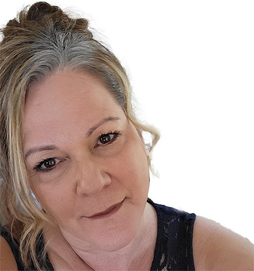
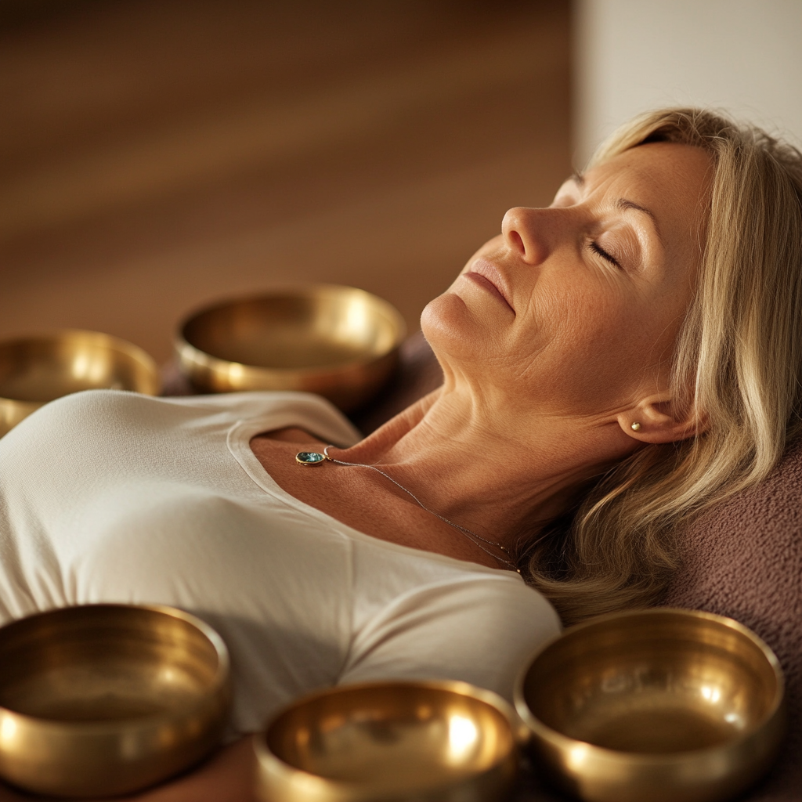
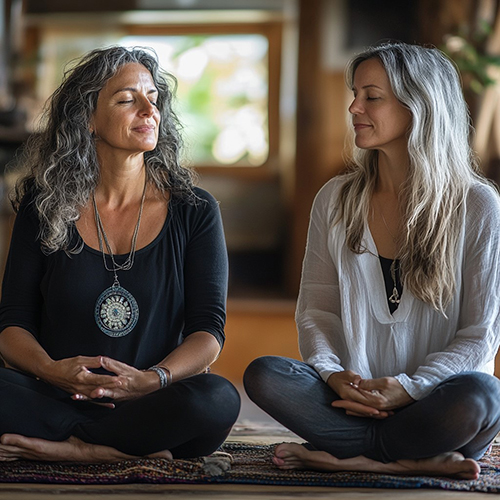
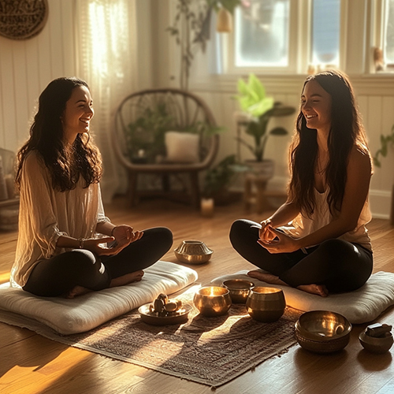

My Mission
At Soulful Serenity Wellness, my mission is to empower individuals in the Okanagan and beyond to embark on transformative healing journeys through energy healing and sound therapy. I offer holistic services that restore balance and harmony to the mind, body, and spirit, with the flexibility of remote energy healing for those seeking convenience and in-person Sacred Healing Day Retreats or sound journeys for a deeply immersive experience. My compassionate approach fosters inner wisdom and promotes healing, allowing you to release what no longer serves you and embrace a life of wellness and purpose. Join me as I guide you on your path to holistic well-being in the beautiful Okanagan Valley.
Michele’s Wellness Story
Hello and welcome to Soulful Serenity Wellness! I’m Michele, and I’m so glad you’re here! My personal health journey began over 20 years ago when I set out to overcome a challenging auto-immune diagnosis using a variety of holistic methods. Along the way, I also faced career burnout, which became a pivotal turning point for me. It inspired me to discover a deeper purpose and reignite my passion for helping others find balance and joy in their lives.
Now, as a certified Energy Healer and Sound Therapy Practitioner (and soon-to-be Compassion Key practitioner!), I’m dedicated to guiding you toward a healthier, more harmonious connection between your mind, body, and soul. Whether you're looking to release energy blockages, work through suppressed emotions, or simply need a moment to reset, I’m here to support your journey every step of the way. Let’s embark on this path to transformation together!
How Helping People Has Changed Me
Every step of my journey as a healer has been nothing short of life-changing. Working with clients has taught me more than I ever imagined about empathy, compassion, and the incredible impact of true human connection. Each session is a unique experience, and I am continually inspired by the amazing transformations I witness.
Through energy work and sound therapy, I've had the privilege of helping others release blockages and rediscover inner peace. It's been deeply fulfilling—not only because I see the positive changes in those I work with but because it has enhanced my own understanding of the mind-body-soul connection. Every person I help deepens my own growth, teaching me to be present, to listen closely, and to truly celebrate every moment of healing.
What keeps me inspired is the profound shifts I get to witness—whether it's a moment of clarity, an aha moment, or a breakthrough in healing. These experiences fuel my passion and remind me of the immense power we all have to heal and grow. I feel so honored to support each individual on their journey, and I'm constantly motivated by their strength and resilience.
If you're ready to experience your own transformation, I’d love to be part of your healing journey. Let’s work together to create lasting change and well-being—one step at a time!
About Healing Services
Energy Healing - Healing from Within
Energy healing helps restore balance by clearing blockages, releasing trapped emotions, and traumas, promoting healing for mind, body and soul.
Sound Bath & Sound Bowl Massage
Unwind and rebalance as sound waves resonate with your natural rhythms, creating a profound sense of relaxation and renewal.
Soulful Serenity Mobile Events

Bring relaxation to your space with mobile Sound and Energy offerings—perfect for corporate events, retreats, staff appreciation, and unique gift experiences!
Sacred Healing Day ~ Retreat
Join us for an exclusive retreat that includes energy healing, sound massages, a transformative fire ceremony, and a nourishing lunch.
Soulful Serenity Energy Spa Retreat
Immerse yourself in a 4-hour energy healing spa experience, featuring soulful synergy sessions and frequency-raising practices for deep renewal.
Take the Next Step in Your Healing Journey
If you’re ready to embrace transformation and reclaim your inner peace, I’m here to guide and support you every step of the way. This process is all about you—finding balance, releasing what no longer serves you, and stepping into a life of clarity and empowerment.
Before we begin, I’d love to connect for a quick 15-minute chat. This is your chance to share your intentions, explore what you’d like to heal or release, and ensure the session is perfectly aligned with your needs. If you feel you would rather not, that is ok too.
What to Expect During Your Energy Healing Session
Your energy healing session is designed to help you feel safe, supported, and empowered as you embark on a journey of self-discovery and renewal.
Relaxation & Grounding
You'll begin by settling into a peaceful atmosphere where stress gently melts away. Soft sounds and calming energy create the perfect environment for healing to unfold.
Intuitive Guidance
Through a blend of intuition and proven techniques, I'll tune into your energy, identifying areas that need balance, clearing, or support.
Tailored Healing
Each session is unique and customized to your needs, using proven methods of energy healing to restore harmony in your mind, body, and spirit.
Empowerment & Clarity
By the end of the session, you'll feel lighter, more grounded, and connected to your inner strength. Many clients describe feeling a deep sense of peace, clarity, and rejuvenation.
Whether you're seeking relief from emotional or physical stress, guidance in your personal journey, or simply a moment to recharge, this experience offers a safe and uplifting path forward. Come as you are—leave feeling renewed.
For remote sessions, you will be sent a simple instruction sheet via email instructing you to get comfy in an uninterrupted space for a minimum of 1 hour.
What to Expect During a Sound Bath - Relaxation and Healing Through Sound
Discover the transformative power of sound with my inviting Sound Bath and Sound Bowl Massage experiences. These sessions are designed to help you release stress, balance your energy, and achieve a deep sense of relaxation and harmony.
During a Sound Bath, you’ll rest comfortably on a mat or massage table, surrounded by soft blankets and pillows. As you settle in, you’ll be guided through a soothing meditation while the resonant tones of sound instruments wash over you. These may include crystal singing bowls, Tibetan bowls, chimes, gongs, and other calming tools. The vibrations of the sound work to realign your body, mind, and spirit, leaving you feeling refreshed and rebalanced.
For a more personalized experience, my Sound Bowl Massage combines the benefits of sound with gentle physical vibrations. Singing bowls are placed on your body and played, allowing the frequencies to penetrate deeply into your muscles and energy systems. This practice promotes physical relaxation, clears energetic blockages, and enhances overall well-being.
Whether you're seeking stress relief, improved focus, or emotional clarity, sound healing sessions provide a safe and nurturing space for your journey. Treat yourself to a deeply restorative experience that harmonizes your entire being.
Book your session today and experience the magic of sound!
Soulful Serenity Mobile Events - Bring the Healing Power of Sound to Your Event
Bring the Healing Power of Sound to Your Event
Transform your next gathering into a truly memorable experience with my mobile sound healing services. Perfect for corporate planning days, retreats, special events, fundraisers, and even a relaxing girls' night out, my offerings create an atmosphere of calm, connection, and inspiration.
Sound Baths are an excellent addition to corporate planning days, promoting creativity and focus. The soothing vibrations of singing bowls, gongs, and chimes help clear the mind, reduce stress, and spark fresh, innovative ideas—perfect for enhancing teamwork and productivity.
For retreats, I offer a powerful combination of Sound Baths and energy healing. This transformative experience encourages deep relaxation, emotional balance, and physical renewal, making it an ideal way to recharge and reconnect.
Looking for a fun and unique way to celebrate a girls' night out? A private Sound Bath creates the perfect blend of relaxation and bonding, leaving everyone feeling refreshed and rejuvenated.
Gift certificates are available for all my services, offering your loved ones the gift of a truly unique and restorative experience. Whether for a special occasion or just because, it's a thoughtful way to show you care.
Reach out today for pricing or a personalized quote, and let me bring the magic of sound and healing to your event!
RETREATS
Soulful Serenity Energy Spa Retreat – Let Your Body Meet Your Soul
Treat yourself to 4 hours of pure bliss and transformation with the Soulful Serenity Energy Spa—an immersive experience designed to renew your mind, body, and soul.
-
✨ Blissful Sound Bath & Sound Bowl Massage:
Relax into the soothing vibrations of crystal and Tibetan sound bowls as they wash over you, melting stress and restoring balance. Gentle sound bowl massages enhance the experience, releasing tension and promoting deep relaxation.
-
✨ Energy Healing & Letting Go:
Feel supported as you release anything that no longer serves you. This part of the journey focuses on clearing and balancing your energy, leaving you lighter, clearer, and more aligned.
-
✨ Full-Body Vibrational Healing:
Conclude your session with a unique foot bowl experience, sending rejuvenating vibrations through your entire body. It's a grounding and revitalizing finale that leaves you feeling deeply connected.
-
✨ Personalized Card Pull:
Receive a card pull to gain insight, guidance, or a message from the universe—your perfect takeaway to anchor the experience.
Four hours of uninterrupted self-care, designed to leave you feeling radiant, renewed, and in harmony.
Sacred Healing Private Day Retreat
Welcome to the Sacred Healing Private Day Retreat, a full-day transformative journey designed to align you with your highest purpose and restore balance to your body, mind, and spirit.
Begin your day by setting powerful intentions that guide your path, centering your energy for the journey ahead. This grounding practice opens the way for deep healing.
Next, immerse yourself in the soothing vibrations of a Sound Healing and Sound Bowl Massage. Allow the calming tones to wash over you, relaxing your mind, body, and soul, while harmonizing your energy and restoring peace.
Following the sound bath, enjoy a deep energy healing session. This powerful experience clears emotional and energetic blockages, allowing your energy to flow freely, while supporting your body's natural healing process. Release what no longer serves you and create space for new possibilities.
I'll then guide you into a transformative Fire Ceremony, where you'll release old patterns and limiting beliefs, making way for personal growth and empowerment. This sacred ritual supports you in stepping into your highest potential and embracing new opportunities.
Throughout the day, I'll gently guide you through practices that encourage healing, release limiting beliefs, and strengthen your connection with your inner wisdom.
A nourishing, delicious lunch will replenish your body, leaving you energized and revitalized. It's the perfect moment to reflect and recharge before continuing your healing journey.
The retreat concludes with advanced techniques to protect your energy and raise your vibration, ensuring lasting transformation. You'll leave feeling empowered, inspired, and ready to embrace the possibilities ahead.
This full-day retreat offers a sacred opportunity to reconnect with your true self, elevate your energy, and step into a brighter, more vibrant future. Join me for a deeply healing experience that will nourish your soul and empower your journey forward.
What Our Clients Say
"Michele did a healing on me, and it was the best decision I made to work with her. She asked me about my goals/intentions, shared powerful guidance and messages afterwards. Within days of the healing, I felt more free in my health, my brain felt more focused and aware, and I am feeling more present with myself. I believe the benefits of the geo love healing session will continue to unfold. I would highly recommend Michele for the Geo Love healing - just go for it!"
- S.T., Boston, MA
"Working with Michele has been a truly transformative experience. She has a beautiful energy around her that I instantly connected with. With her intuitive approach and gentle guidance she helped me connect to deeper parts of myself, releasing energy blocks I didn't even realize I was carrying. I felt seen, supported, and empowered throughout the journey. I am profoundly grateful for the clarity and balance Michele has helped me find. If you're seeking healing that goes beyond the surface, Michele is a true gift."
-J.L. British Columbia, Canada
"I had such an amazing energy healing session with Michele! I had been feeling for years that my heart chakra was completely blocked and so I asked Michele if we could work on this area. During the session, I felt a lot of sensation in my chest area as well as in my arms and hands. But what I think was the most powerful was some of the messages Michele relayed to me from my spirit guides. They were SPOT ON exactly what I needed to hear. Since the session, I have made leaps and bounds in healing and transforming the narratives I have around love, men, and relationships. Thank you so much Michele for being a part of my journey!! I appreciate you!"
-A.S., British Columbia, Canada
"Michele is a healer with a gift and a connection to Divine power that she brings through in every healing. In my most recent healing, I just want to say WOW without giving the details! She brought through so many messages for me as well. I am so appreciative of her commitment to bringing the most powerful healings to her clients."
J.G. California, USA
Gallery
Book Your Healing Session
To begin your journey, click below for pricing and to book a session.
Book Now